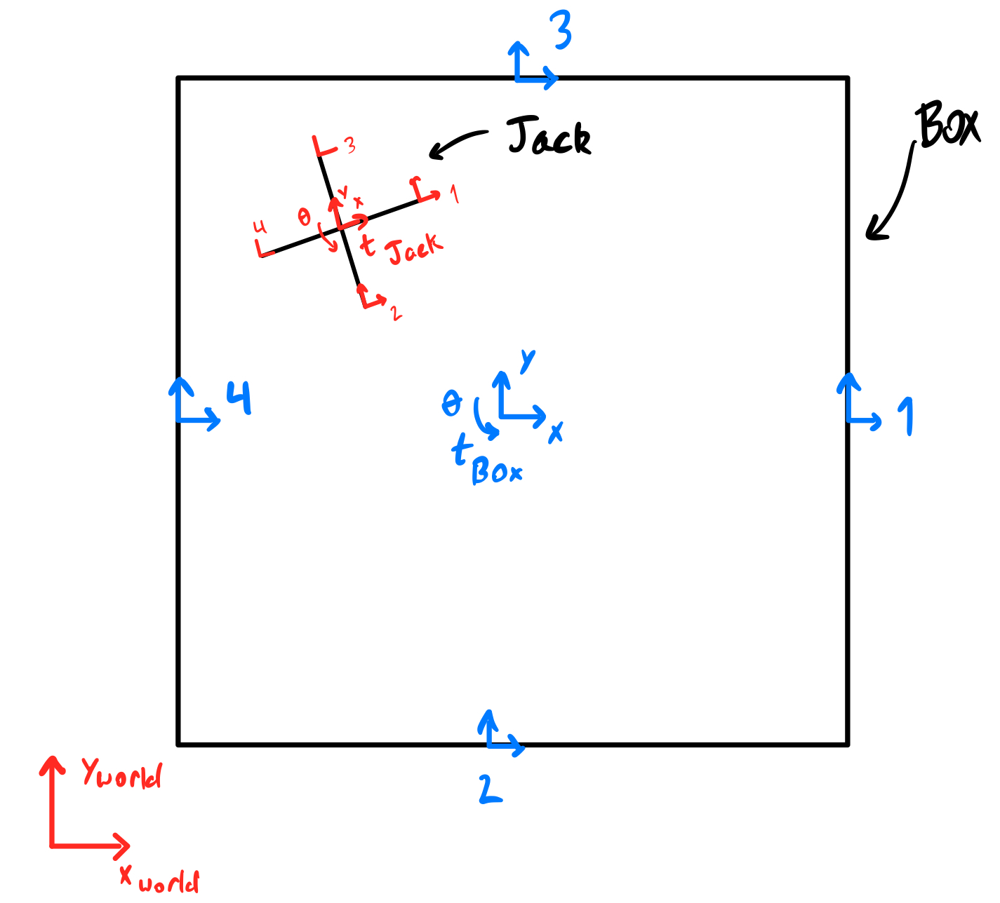

Jack-In-Box Lagrangian Physics Simulation
Simulated and Visualized in Python
Personal Project; November 2023 - December 2023
Video of Simulation:
Background
This project simulates a "Jack-In-Box" system using Lagrangian mechanics and symbolic mathematics. The jack resides inside a box, both influenced by gravity, while the box also experiences sinusoidal external forces and torque. By varying parameters (such as mass, force amplitude, or moment of inertia), we can observe different dynamic behaviors. Both the jack and the box start at rest, and their interaction is governed by the Euler-Lagrange equations derived from the system's kinetic and potential energy.
The external forces on the box are defined as:
$$f_{y,\text{box}} = 4 m g + 0.5 k \sin(2 \pi t), \quad f_{x,\text{box}} = 0.5 k \sin(2 \pi t), \quad f_{\theta,\text{box}} = k \sin(\pi t)$$
Definition of Coordinate Transforms
We represent the position and orientation of the jack and box using SE(3) transformation matrices. For planar motion, these simplify to a rotation about one axis and translations in the plane:
$$ g = \begin{bmatrix} R & p \\ 0 & 1 \end{bmatrix}, \quad R \in SO(2), \quad p \in \mathbb{R}^2 $$

Applying these transformations allows us to track each component (jack arms, box walls) relative to a global frame. This geometric framework underlies the subsequent dynamic analysis.
Simulation via Euler-Lagrange Equations
The motion is governed by the Euler-Lagrange equations, derived from the Lagrangian \(L = T - V\), where \(T\) is kinetic and \(V\) is potential energy. For generalized coordinates \(q_i\):
$$\frac{d}{dt}\frac{\partial L}{\partial \dot{q}_i} - \frac{\partial L}{\partial q_i} = F_i$$
Here, \(F_i\) represents external forces. By solving these equations numerically, we obtain the trajectory of the jack and box under the influence of gravity and time-varying sinusoidal forces.
Kinetic and Potential Energy of Bodies in Motion
Each rigid body’s kinetic energy accounts for both translation and rotation, computed using a body velocity vector \(\bar{V}\) derived from \(g\) and \(\dot{g}\). If \(I\) is the inertia matrix, then:
$$T = \frac{1}{2} \bar{V}^T I \bar{V}, \quad V = 4m_1 g y_j + 4m_2 g y_b$$
The jack and box have respective inertia matrices \(I_j\) and \(I_b\), and substituting these into the Euler-Lagrange equations yields a set of coupled differential equations that describe their motion.
Forces, Hamiltonian, and Numerical Solutions
External sinusoidal forces and torques are applied to the box. The Hamiltonian \(H\), representing total energy, is also computed:
$$H = \sum_i \dot{q}_i \frac{\partial L}{\partial \dot{q}_i} - L$$
Using the Sympy library, these symbolic equations are derived and then solved numerically. The code uses lambdify to convert symbolic expressions into numeric
functions for integration.
Implementing the Simulation in Python
The simulation code, as shown in the Python snippet, sets up the entire problem:
- Symbolic Setup: The code defines symbolic variables for positions, angles, and their derivatives \((x_j, y_j, \theta_j, x_b, y_b, \theta_b)\), along with physical parameters
\((m, k, g)\). SE(3) matrices and helper functions
se3sym,calcVcompute body velocities and transforms. - Euler-Lagrange Equations: The Lagrangian \(L = T - V\) is formed, derivatives are taken, and the equations of motion are solved using
sym.solve. The code then generates numeric functions for \(\ddot{q}\) usinglambdify. - Integration Routine: An RK-4 integrator advances the state through time. The
simulateandsimPactfunctions repeatedly call this integrator to produce trajectories.
Handling Impacts
The simulation must constantly monitor impacts between the jack and the box walls. The code sets up a set of conditions \((\phi)\) that trigger when a jack arm touches a wall. The program checks each of the 16 possible interactions on each update frame. Upon detection, the velocities are updated to satisfy post-impact conditions, enforcing the conserved energy from the Hamiltonian.
Impact equations are formed by evaluating the Hamiltonian and comparing pre- and post-impact velocities. The code defines an isImpact function to
detect when conditions are met and an impact_update function to solve for the post-impact velocities.
For example, if an impact is detected at a particular jack arm-to-wall interaction, the code solves a system of equations to find the updated velocities \(q_i^+\). These updates often set certain velocity components to zero or scale them based on a restitution condition, ensuring the trajectory matches physical expectations.
Bringing It All Together
Combining SE(3) transforms, the Euler-Lagrange formulation, numeric integration, and an impact-handling mechanism produces a comprehensive simulation. By adjusting parameters, one can explore different regimes: heavy boxes, lighter jacks, stronger external forces, or frequent impacts. The final output is animated, showing the jack bouncing inside the box as it responds to gravity and oscillating forces.